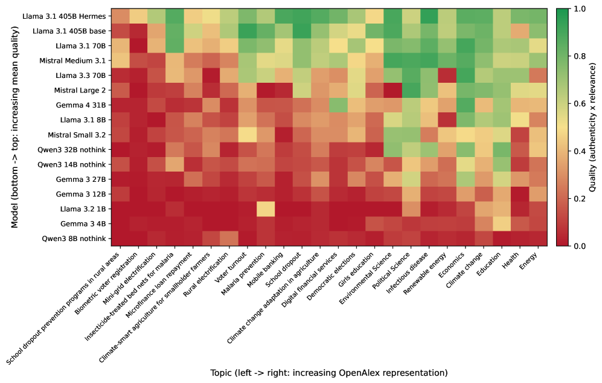

![Figure 2: Factual recall quality scales log-linearly with model size across architectures and training generations (e.g., Llama 3.1, 3.2, & 3.3). (a) Quality versus parameter count for 16 dense models from four independent families (Llama, Gemma, Mistral, Qwen). Dashed line shows log-linear fit ( R 2 = 0.794 R^{2}=0.794 ). Systematic offsets between families reflect differences in training procedure rather than scale. (b) The relationship extends to 28 models across all architectures when plotted against total parameter count ( R 2 = 0.712 R^{2}=0.712 ). MoE models (diamonds) follow the same trend as dense models, suggesting total rather than active parameters dominate the noise floor.](figures/1091/fig_002.png)
This paper shows that factual recall quality in LLMs follows a sigmoid scaling law in the log-linear combination of model size and topic frequency in training data, explaining up to 94% of variance within model families.
本文提出一个统一的S形缩放定律，将模型参数规模与训练数据中主题频率结合，可解释LLM事实回忆质量高达94%的方差。该工作为预测模型在特定主题上的知识盲区提供了定量工具，对构建可靠AI系统具有直接指导意义。
Deep Note — predictable-confabulations
0) Metadata
- Title: Predictable Confabulations: Factual Recall by LLMs Scales with Model Size and Topic Frequency
- Alias: predictable-confabulations
- Authors: Matthew L. Smith, Jonathan P. Shock, Samuel T. Segun, Iyiola E. Olatunji, Tegawendé F. Bissyandé
- arXiv ID: 2605.18732
- Published:
- Links:
- Abs: https://arxiv.org/abs/2605.18732
- HTML: https://arxiv.org/html/2605.18732v1
- PDF: https://arxiv.org/pdf/2605.18732
- Tags: scaling-laws, factual-recall, superposition, confabulation, llm-reliability
- Domains: ai_safety, system_safety
- Rating: 4/5 (base 1 + quality 2 + observation 1)
1) Why-read
This paper shows that factual recall quality in LLMs follows a sigmoid scaling law in the log-linear combination of model size and topic frequency in training data, explaining up to 94% of variance within model families.
2) CRGP
C — Context
Scaling laws for LLMs have primarily focused on aggregate loss, not decomposed into specific capabilities like factual recall. Prior work has separately linked model size to knowledge capacity via superposition and topic frequency to recall accuracy, but no unified predictive framework existed.
R — Related work
- Kaplan et al. established power-law scaling of loss with model size, dataset size, and compute.
- Hoffmann et al. refined scaling laws for compute-optimal training.
- Allen-Zhu and Li showed knowledge capacity scales at ~2 bits per parameter.
- Elhage et al. introduced superposition as encoding more features than dimensions.
- Kandpal et al. and Mallen et al. showed LLMs struggle with long-tail knowledge.
- Liu et al. provided empirical evidence for strong superposition in LLMs.
- Carlini et al. quantified memorization increasing with data repetition and model size.
G — Gap
No prior work combined model size and training-data frequency into a single predictive scaling law for factual recall quality. Existing studies treated these factors independently, lacking a unified functional form that could predict recall performance across models and topics.
P — Proposal
The authors propose a sigmoid scaling law where recall quality = σ(α log10 P + β log10 S + γ), with P as parameter count and S as topic frequency proxy. This is motivated by a superposition-inspired signal-to-noise ratio model: signal strength scales with concept frequency, noise floor scales inversely with model capacity.
---
4) Experiments
Main results
Evaluated 38 models on 8,913 scholarly references across 24 topics. The two-variable model explains 60% of variance across 16 dense models from 4 families (R²=0.599, N=384), rising to 74-94% within individual families. Topic frequency positively associated with recall quality independently of architecture or parameter count.
Ablation
Within-family R² values range from 0.74 to 0.94, indicating that the sigmoid form fits better when controlling for architectural differences; the cross-family R² of 0.60 shows that model family-specific factors account for additional variance.
Limitations
['The proxy S (OpenAlex work count) conflates topic frequency with inventory size, not formally separating signal strength from concept count.', 'The theoretical framework relies on several assumptions (e.g., power-law signal mapping, Zipfian concept frequencies) that are plausible but not uniquely selected by the data.', 'Only scholarly references are used as factual recall targets; generalizability to other factual domains is not established.']
5) Why it matters
- Provides a quantitative tool to predict which facts an LLM will recall based on model size and training data composition, directly relevant to building reliable AI systems.
- The superposition-inspired SNR model offers a mechanistic explanation for why larger models recall rarer facts better, connecting scaling laws to interpretability research.
- Enables proactive identification of knowledge gaps in LLMs for specific topics, informing data collection or retrieval augmentation strategies.
6) Next steps
- [ ] Validate the scaling law on other factual domains (e.g., Wikidata, medical facts) to test generalizability.
- [ ] Use the model to predict recall quality for specific topics in a target LLM and design targeted fine-tuning or retrieval augmentation.
- [ ] Investigate whether the sigmoid form holds for other capabilities (e.g., reasoning, translation) to build a unified scaling theory.
7) Scoring
4/5 = base 1 + quality 2 + observation 1
可预测的虚构：LLM的事实回忆能力随模型规模与主题频率缩放
主要结论 - LLM的事实回忆质量遵循S形缩放定律：回忆质量 = σ(α log₁₀ 参数量 + β log₁₀ 主题频率 + γ)。 - 该模型在单个模型家族内可解释74%-94%的方差，跨家族解释60%的方差。 - 主题频率与回忆质量正相关，独立于架构或参数量。 - 基于叠加原理的信噪比模型提供了机制解释：信号强度随概念频率缩放，噪声基底随模型容量反比缩放。
1) 阅读理由
本文核心主张：事实回忆质量遵循S形缩放定律，关键发现：模型规模与主题频率的log-线性组合可解释高达94%的方差。
2) CRGP（背景 / 相关工作 / 差距 / 方案）
背景：LLM缩放定律主要关注聚合损失，未分解到具体能力如事实回忆。相关工作：Kaplan等人建立损失与模型规模、数据规模、计算量的幂律缩放；Allen-Zhu和Li显示知识容量约2比特/参数；Elhage等人引入叠加原理；Kandpal等人和Mallen等人显示LLM在长尾知识上表现不佳。差距：尚无工作将模型规模与训练数据频率结合为单一预测性缩放定律。提案：作者提出S形缩放定律，其中回忆质量 = σ(α log₁₀ P + β log₁₀ S + γ)，P为参数量，S为主题频率代理，基于叠加启发的信噪比模型。
3) 实验
在38个模型上评估了8,913个学术参考文献，涵盖24个主题。双变量模型在4个家族的16个密集模型上解释60%的方差（R²=0.599，N=384），在单个家族内升至74%-94%。主题频率与回忆质量正相关，独立于架构或参数量。
消融实验
家族内R²值范围为0.74至0.94，表明控制架构差异后S形拟合更好；跨家族R²为0.60，显示模型家族特定因素贡献额外方差。
局限性
['代理S（OpenAlex作品数）混淆了主题频率与库存规模，未正式分离信号强度与概念数量。', '理论框架依赖若干假设（如幂律信号映射、Zipfian概念频率），虽合理但数据未唯一选择。', '仅使用学术参考文献作为事实回忆目标，未验证对其他事实领域的泛化性。']
4) 重要性
- 提供定量工具预测LLM基于模型规模和训练数据组成的事实回忆能力，直接相关于构建可靠AI系统。
- 叠加启发的信噪比模型为更大模型更好回忆稀有事实提供了机制解释，连接缩放定律与可解释性研究。
- 能够主动识别LLM在特定主题上的知识盲区，指导数据收集或检索增强策略。
5) 下一步
- [ ] 在其他事实领域（如Wikidata、医学事实）验证缩放定律以测试泛化性。
- [ ] 使用模型预测目标LLM在特定主题上的回忆质量，设计针对性微调或检索增强。
- [ ] 研究S形形式是否适用于其他能力（如推理、翻译），以构建统一缩放理论。

![Figure 4: Factual recall quality follows a sigmoid in the log-linear combination of model size and topic representation frequency. Light blue points show individual model × \times topic observations ( N = 384 N=384 ); coloured points show per-model averages by family (Llama, Gemma, Mistral, Qwen). The dashed curve is the fitted logistic σ ( z ) \sigma(z) , where z = α log 10 P + β log 10 S + γ z=\alpha\log_{10}P+\beta\log_{10}S+\gamma ( R 2 = 0.599 R^{2}=0.599 ). Residual variance is greatest in the mid-range where models are near the recall threshold, compressing toward zero at the floor and ceiling as predicted by the sigmoid geometry.](figures/1091/fig_004.png)
![Figure 5: Larger models recall less-cited papers. Median citation count of correctly recalled references (SourceVerify status verified or verified-with-error ) plotted against model size on a log–log scale, for 10 dense models from four families with n ≥ 50 n\geq 50 matched references each. Error bars are bootstrap 95% CIs on the per-model median ( 10 , 000 10{,}000 resamples). The dashed line is a weighted log–log fit using the bootstrap-derived standard errors as inverse-variance weights (slope = − 0.35 =-0.35 , R 2 = 0.59 R^{2}=0.59 , Spearman ρ = − 0.79 \rho=-0.79 , p = 0.007 p=0.007 ). Larger models extend recall further down the citation tail, consistent with a superposition account in which stronger parameter redundancy is required to encode low-frequency information.](figures/1091/fig_005.png)
![Figure 1: SourceVerify status versus human authenticity verdict. Confusion matrix for 301 independent ratings (288 unique references; 13 double-rated) by four human reviewers across four SourceVerify status categories. Both verified (75/75) and verified-with-error (61/61) contain exclusively real papers (100%); unverified is 97% not real with 3 real papers missed; needs-human is the genuine grey zone (52/66 not real). Treating ambiguous human verdicts as not real ( n = 301 n=301 ), binary precision is 100% and specificity is 100%; all 17 disagreements are SourceVerify false negatives.](figures/1091/fig_001.png)